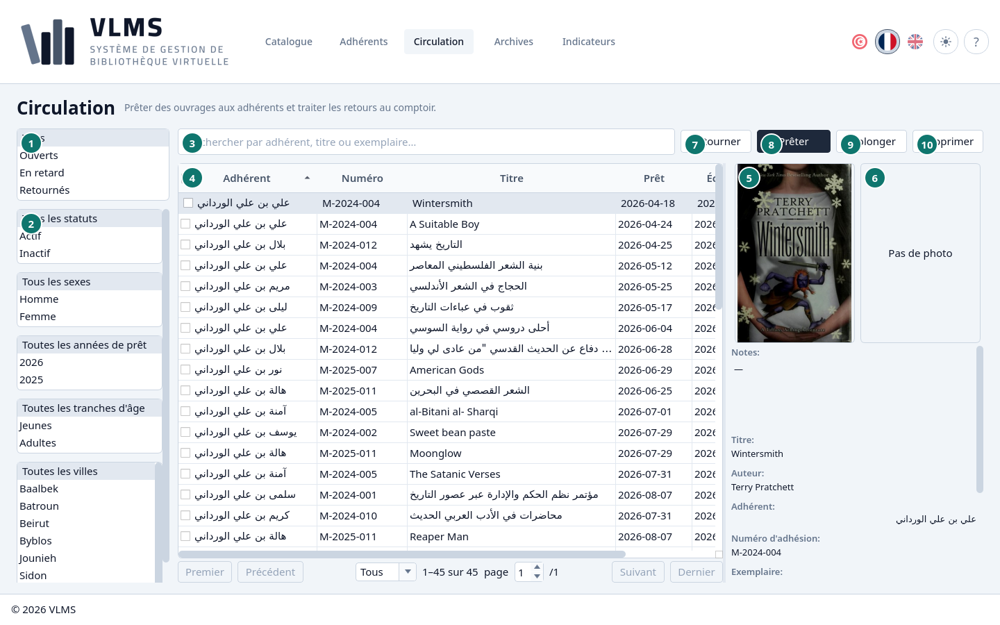
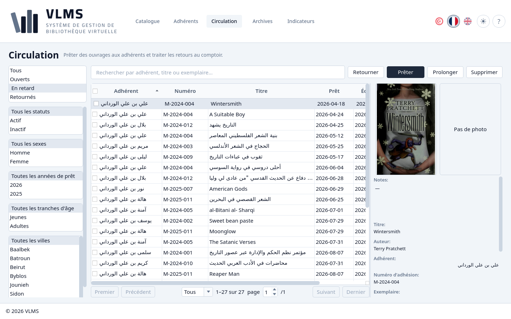
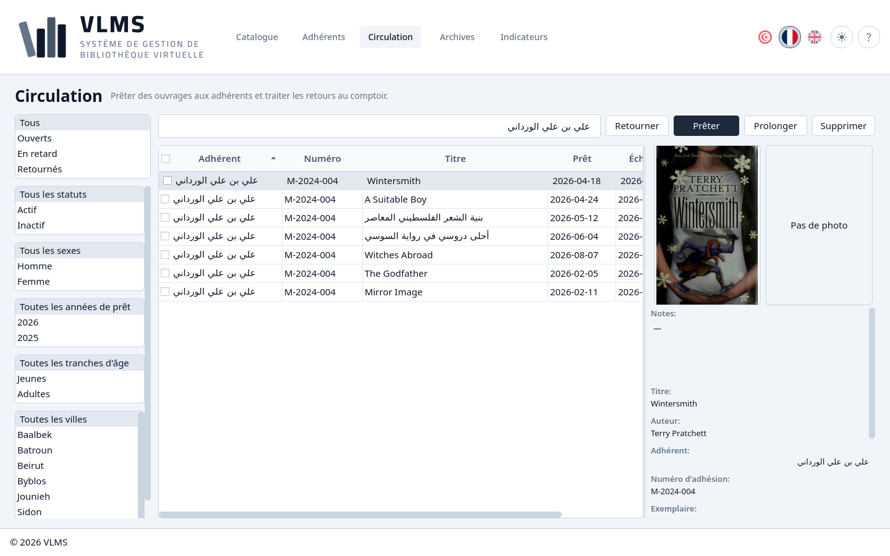

Circulation
Ce qui est sorti, ce qui est en retard, et ce qui est revenu.
La Circulation est la liste des prêts encore en service. Un prêt ouvert ou en retard veut dire que l'exemplaire n'est pas sur le rayon. Un prêt retourné veut dire qu'il l'est.


- Le filtre d'état.
- Les filtres d'adhérent.
- La recherche.
- La liste.
- La couverture de l'ouvrage prêté, ou l'image d'attente quand il n'en a pas.
- La photo de l'adhérent, ou Pas de photo.
- Retourner
- Prêter
- Prolonger
- Supprimer
Le détail du prêt surligné est sous les deux images : l'adhérent, l'exemplaire et les dates.
Le filtre
Le filtre est un seul choix. Il s'ouvre sur Tous.
- Ouverts — sortis, et dus aujourd'hui ou plus tard.
- En retard — sortis, et dont le jour dû est passé.
- Retournés — de retour sur le rayon.


Ouverts n'inclut pas En retard. Voir États d'un prêt.
Les filtres d'adhérent
Sous le filtre d'état se trouvent les listes des Adhérents : statut, sexe, tranche d'âge et ville gardent les prêts dont l'adhérent correspond. La liste des années, qui commence par Toutes les années de prêt, est l'année du prêt, pas l'année d'inscription de l'adhérent. Elles se combinent avec le filtre d'état et entre elles : En retard et Jeunes donnent les prêts en retard des jeunes adhérents.
Recherche
La recherche suit le titre, le numéro d'adhésion et le nom complet. Un nom et un prénom ensemble trouvent l'adhérent.


Les boutons
Prêter sort un exemplaire. Prolonger et Retourner suivent le prêt surligné et ne sont disponibles que tant que ce prêt est encore sorti. Supprimer archive un prêt retourné. Les étapes sont Prêter un ouvrage, Retourner ou prolonger et Retirer.